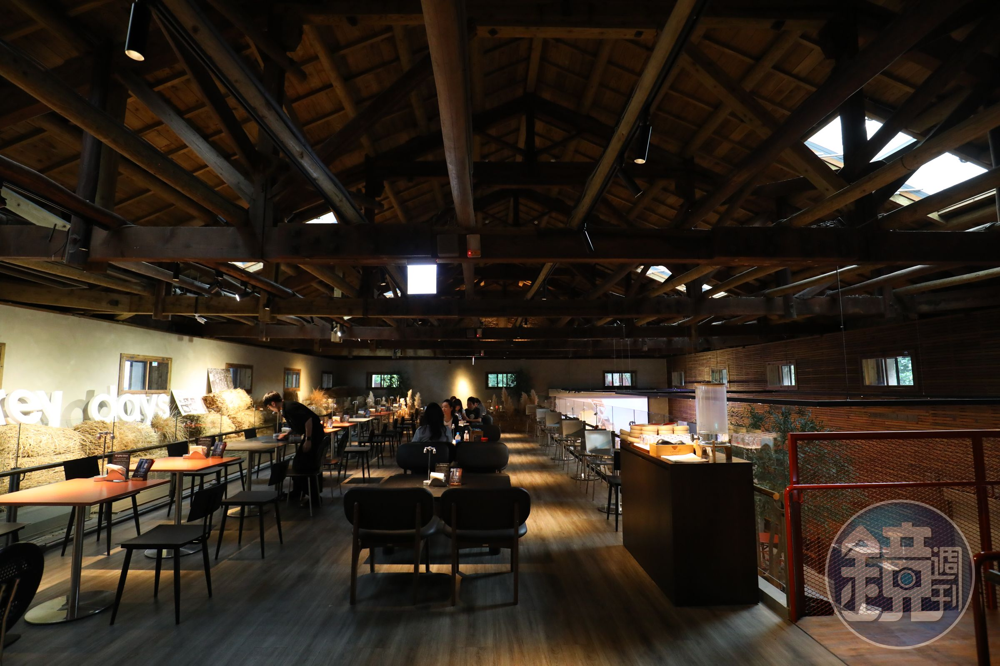
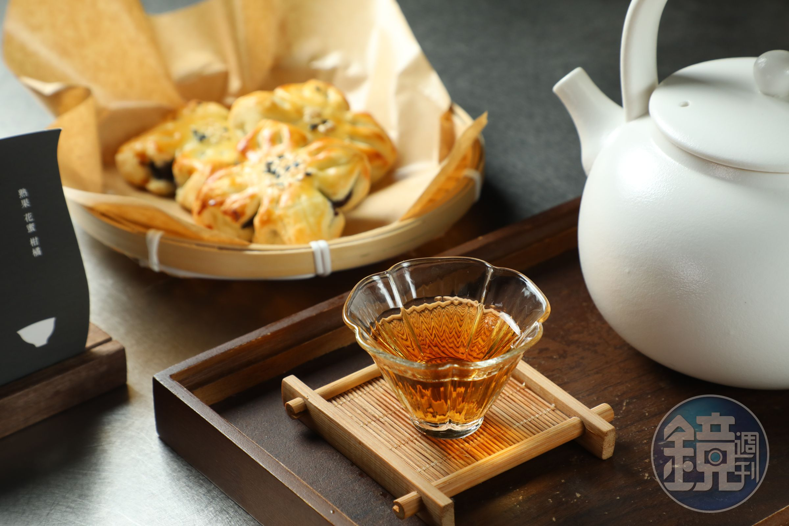
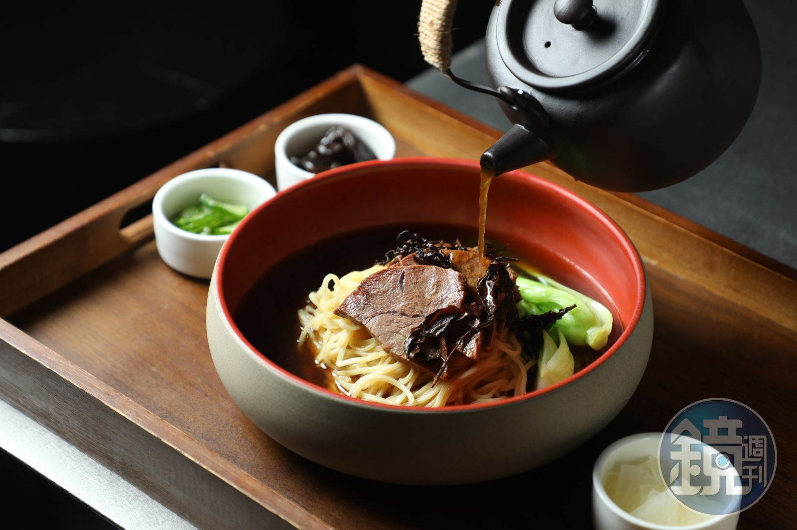

老糧倉的新生
這裡原本是日治末期建造的糧倉，建物本身有雙層牆與中空結構，用來隔絕濕氣與熱氣。由薇閣集團旗下的「一茶一瓦」進駐後，保留了老屋的質地，加入現代的茶館設計，讓歷史與現在在同一個空間裡對話。
一樓是茶吧與酒吧，二樓座位區可以仔細觀察日治時代留下來的糧倉結構。店內也會規劃展演與租借空間，平日來坐坐很舒服，假日人潮較多。
二樓座位區與糧倉結構
來源：鏡週刊 ↗值得點的茶飲
招牌是以唐朝瓦罐煮茶為靈感的瓦奶系列，喝的是一種慢慢熬出來的溫潤感。另外，講究茶葉本身的人，可以試試精品煮茶，茶葉來自台灣高山契作茶莊，用紫砂壺沖泡。
紅棗玫瑰瓦奶180 元／壺
紅玉紅茶加上黑糖、紅棗與大馬士革玫瑰，甜度不高，帶有淡淡花草香，整壺喝完不會膩。
梨山蜜香紅茶「一騎紅塵妃子笑」250 元／壺
來自梨山的蜜香紅茶，入口有蜜香，回甘明顯，適合搭配點心慢慢喝。
荷花酥125 元／份
包入綿密豆沙餡，外皮酥脆，和熱茶一起吃很對味。

來源：鏡週刊 ↗茶點方面，「櫻花紫薯包」（135 元／份）與台味炸物「蒔內卜肉」（175 元／份）也是人氣選擇，適合搭配熱茶或茶調酒一起點。
湯麵也能用茶入菜。「桂花紅茶清燉牛肉麵」使用手工雞蛋麵，再倒入一壺帶有花香的茶湯，清爽又獨特（255 元／碗），是跟一般牛肉麵不同的選擇。
桂花紅茶清燉牛肉麵

茶也能變成酒
如果晚上想喝點酒，店裡採用 Draft 技術製作的茶調酒是另一個選擇。「龍攤NO戲」以奶香金萱加上龍舌蘭為基底，帶有刺蔥與鳳梨的果香（280 元／杯）；「甘梅當拎」以鐵觀音為主調，加入蘭姆酒與梅子，酸甜中帶著茶香（200 元／杯）。兩款都保留了茶香，適合不太想喝純酒的人。
不想喝酒的人也有選擇，「包種茶香片啤啤茶」以現萃濃茶結合啤酒花與氣泡，口感很像啤酒，卻完全沒有酒精（150 元／杯）。